![Orlando, FL – In December 2013, John Rife, owner of East End Market, first pitched the idea of Fleet Farming at The Hive Orlando, an IDEAS For Us “think and do tank” that calls on citizens to come up with solutions to global challenges. Over the next few months, Rife and other members of IDEAS For Us streamlined the concept. In February 2014, The Fleet Farming pilot program converted 5 lawns to farmlettes. By summer of that year, Healthy Central Florida Foundation had awarded the program a $5,000 grant to help it expand. By January 2015, the program had received an additional $10k in grants from 1% For the Planet and the Cliff Bar Foundation. In August 2015, Fleet Farming Orlando was on its way to having 15 farmlettes and had sold over $7,000 in produce. Without considering any of the grants received, Fleet Farming recouped all start up costs in the first year and profited. A true success story!](images/u5661-6.png)

![Fleet Farming transforms unproductive, wasteful lawns into community-driven urban farm plots. Rather than traveling 1,500 miles from farm to plate, our produce is hyper-local. Everything we grow is sold at local farmers markets and restaurants within a 5 mile radius! Our bike-powered fleet eliminates nearly all fossil fuel consumption during production and transportation, not to mention it reduces the emissions that would have been produced from mowing lawns. Lastly, we are reducing pollutants in our community by cutting the use of harmful pesticides and fertilizers on lawns and using organic methods
to grow food instead.](images/u5708-9.png)